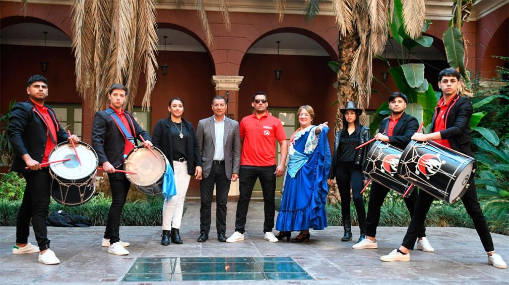

Para esta nueva edición se organizaron carreras clásicas, duelo de payadores, carpas de artesanos, comidas regionales y una destacada cartelera artística.
Como todos los años, el 1° de Mayo se realizará desde las 9 hs el tradicional Festival de “Doma
y Folclore”, en
el predio ubicado en el ingreso norte de Villa Robles, sobre la ruta provincial N° 1 frente al arco de ingreso.
Para esta nueva edición se organizaron carreras clásicas, duelo de payadores, carpas de artesanos, comidas
regionales y una destacada cartelera artística que incluye a La Banda del Rey Santiagueño Pastor Luna, Ceferino
Torres, “Pochi” Chávez, Los Sachitas, Miguel Figueroa y su Conjunto Amanecer Campero, Los Santiagueños del Río,
Marcelo Veliz, Las Sachas Guitarras Atamisqueñas, Alejandro Veliz, Los Legüeros, Academia Municipal Renacer de Mi
Tierra, Franco Arroyo, Huguito Flores y la presentación especial de Daniel Agostini.